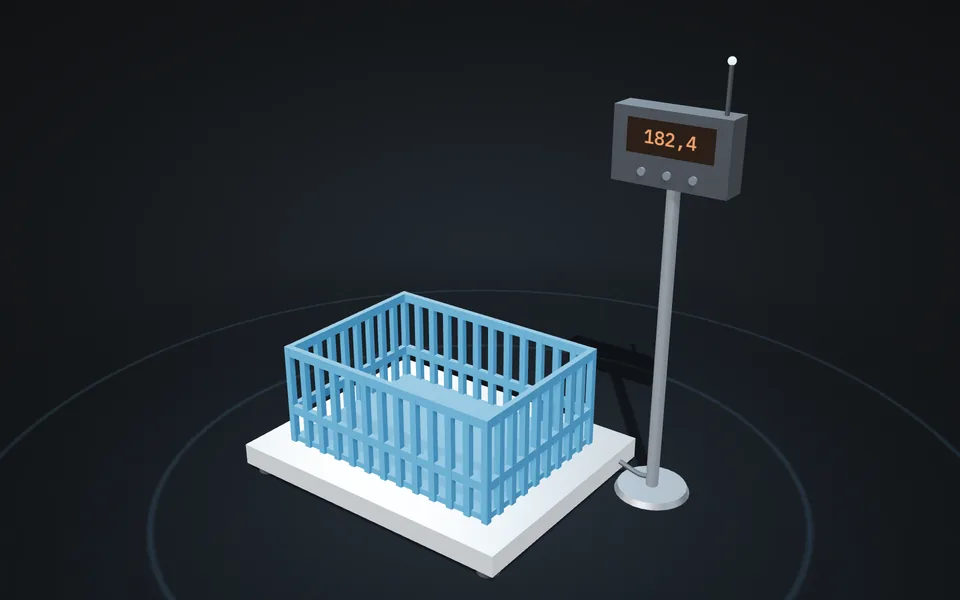
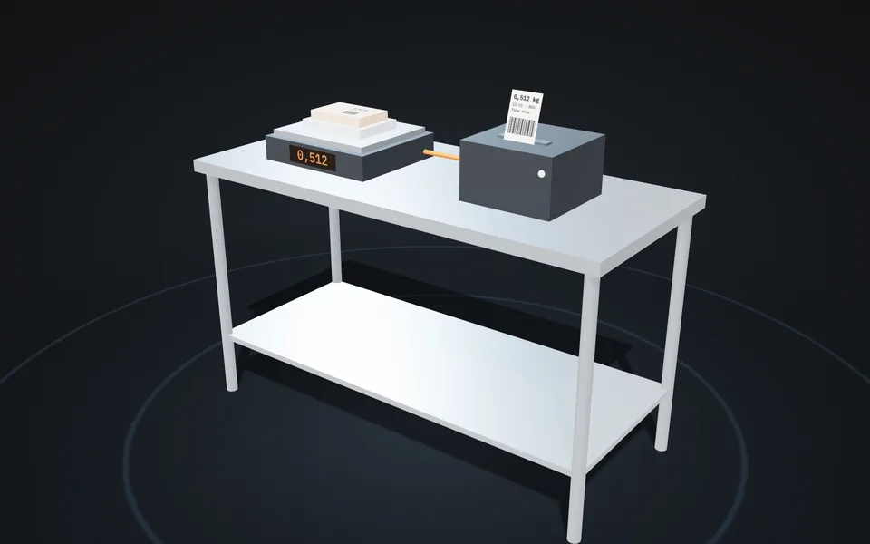
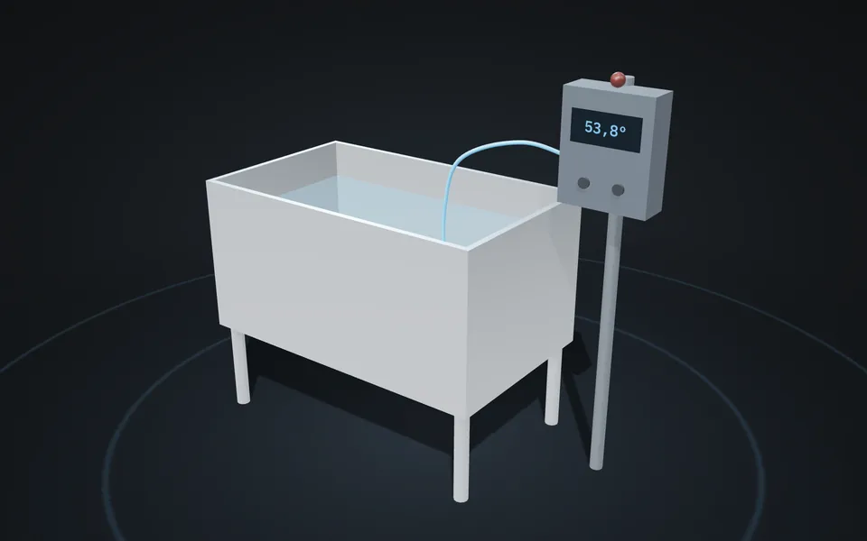
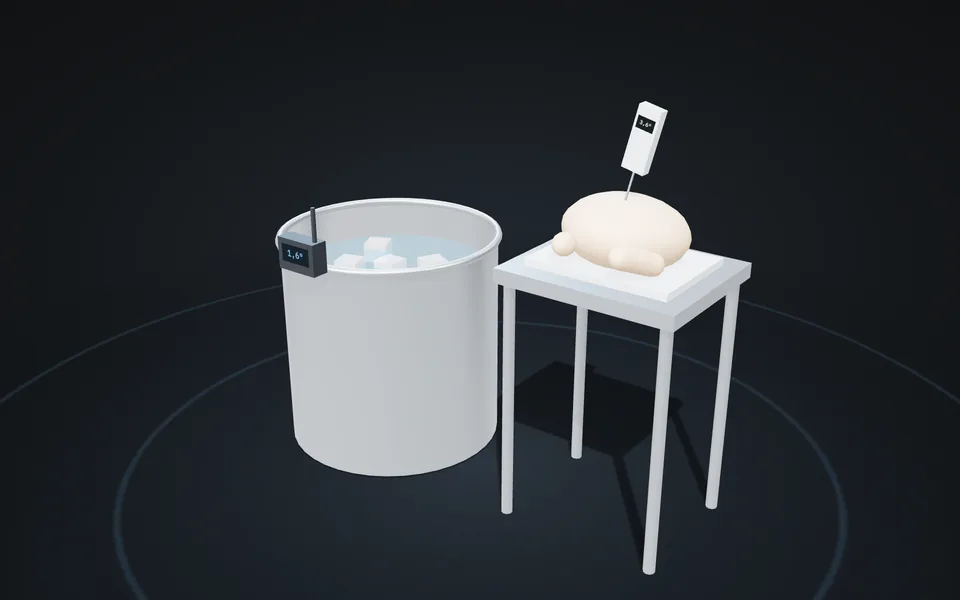
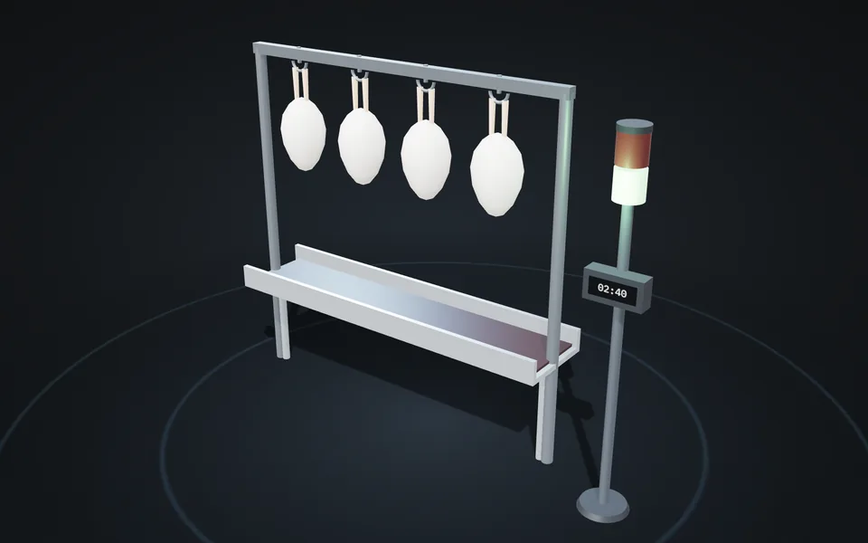
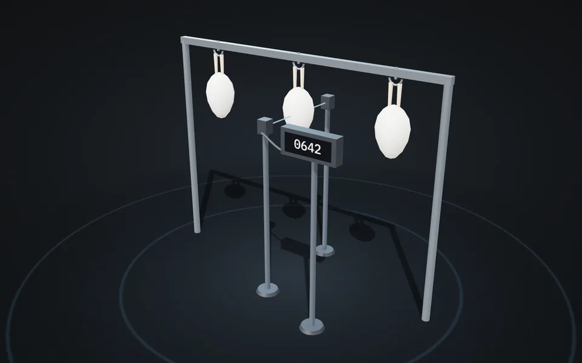
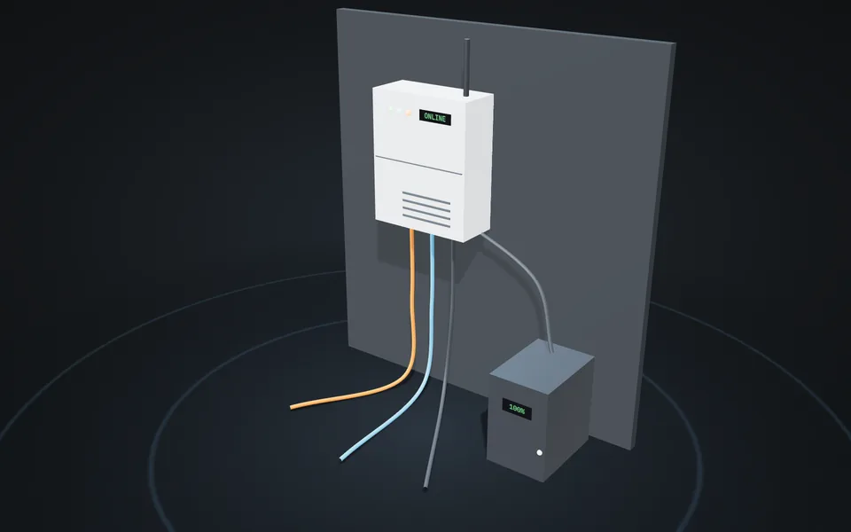
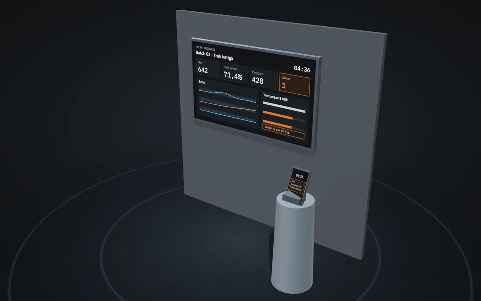

Dari ayam hidup datang sampai potongan berlabel. Di setiap titik dipasang alat ukur yang mengirim angkanya sendiri, jadi tidak ada lagi catatan tulis tangan. Hasilnya kelihatan di layar ruang produksi dan di HP Ibu.
Mesin tetap dibeli dari pembuat mesin lokal. Bagian kami: alat ukur di tiap titik, menyambungkan semuanya, dan layar pemantaunya.
Timbangan duduk terhubung
Tablet: pemasok, jumlah ekor, ekor mati di jalan
Sensor suhu & lembap ruang
Kipas nyala sendiri kalau ruang terlalu panas, ayam tidak susut
Penghitung ekor otomatis
Sembelih tetap oleh juru sembelih halal
Timer + lampu hijau/merah
Belum mati sempurna, belum boleh masuk bak rendam
Termostat digital + sensor
Suhu air dijaga dalam rentang, alarm kalau kepanasan atau kedinginan
Mesin pencabut bulu
Timer putaran, catat ayam yang harus dicabut ulang
Timbangan meja terhubung
Ati-ampela, ceker, kepala ikut ditimbang, karena itu juga uang
Sensor suhu air pendingin
Termometer tusuk: daging harus di bawah 4 °C sebelum dikirim
Timbangan karkas + lampu kelas berat
Di sini kelihatan: dari ayam hidup jadi berapa kilo
Mal potong + printer label
Berat, tanggal, kode batch. Komplain bisa dilacak sampai pemasok
Contoh denah ruang potong. Area kotor dan area bersih dipisah dinding, seperti yang disyaratkan untuk rumah potong unggas. Nomor menunjukkan letak alat, titik oranye menunjukkan jalan ayam. Denah sebenarnya kami sesuaikan setelah melihat ruangan Ibu.
Geser denah ke samping untuk melihat seluruhnya.
Semuanya barang jadi yang dijual di pasaran, bukan alat rakitan coba-coba. Gambar 3D di bawah adalah konsep; bentuk aslinya mengikuti merek yang dipilih bersama. Tekan Putar 3D untuk melihat dari segala sisi.

Keranjang ayam hidup ditimbang, angkanya langsung terkirim. Tidak ada lagi nota tulis tangan.

Jeroan dan pak potongan ditimbang. Label keluar sendiri berisi berat, tanggal, dan kode batch.

Menjaga air tetap di suhu yang disepakati. Kalau kepanasan atau kedinginan, alarm berbunyi.

Air pendingin dipantau terus. Daging dicek dengan tusukan, baru boleh dikemas kalau sudah di bawah 4 °C.

Hijau berarti ayam sudah cukup lama ditiriskan dan boleh masuk bak rendam. Merah berarti tunggu dulu.

Sensor sinar di rel gantung menghitung setiap ayam yang lewat. Jumlah potong per jam langsung kelihatan.

Mengumpulkan angka dari semua alat. Tetap mencatat saat internet putus atau listrik padam sebentar.

Mandor melihat suhu dan hitungan di layar. Pemilik dapat ringkasan dan pemberitahuan alarm di HP.
Tidak ada yang diketik ulang. Kalau internet putus, alat tetap mencatat dan mengirim belakangan.
Contoh tampilan waktu truk ketiga hari itu sedang dipotong. Semua angka di bawah hanya contoh.
Pemberitahuan yang sama juga masuk ke HP Ibu, jadi tetap tahu walau tidak sedang di tempat.
Mulai dari yang tidak mengubah cara kerja karyawan, lalu ditambah seiring jumlah ekor bertambah.
Timbangan terhubung di 3 titik, sensor suhu di bak rendam dan pendingin, printer label, layar pemantau. Dalam beberapa minggu sudah kelihatan susut terbesar di titik mana.
Suhu bak rendam dijaga otomatis, penghitung ekor dan lampu tiris darah, rel gantung supaya ayam pindah titik tanpa diangkat-angkat.
Pemilahan berat karkas, mal atau mesin potong untuk ukuran sama, label per pelanggan, pemantauan suhu mobil boks.